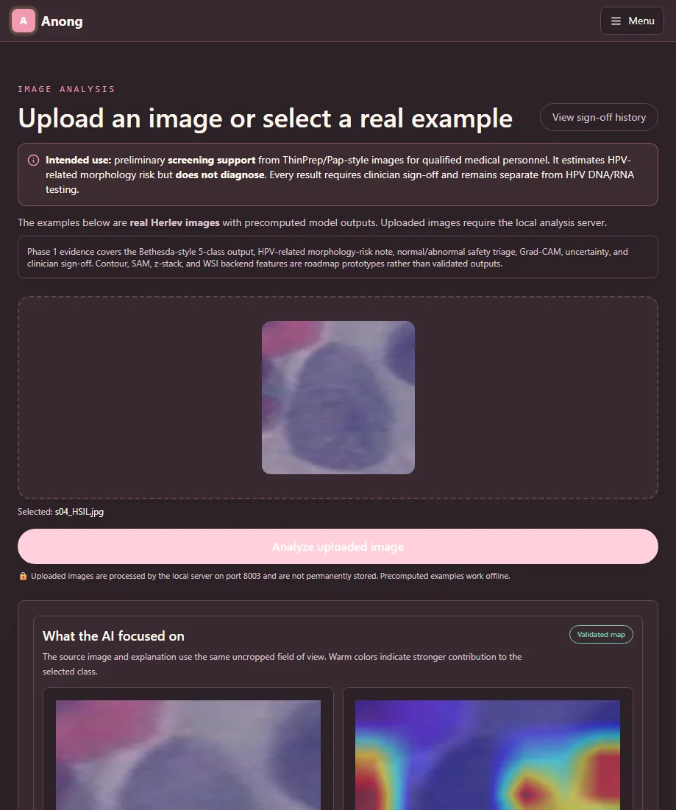

PROJECT 01 / RESEARCH PROJECT
CerviCo-Pilot
Explainable AI สำหรับการคัดกรองภาพเซลล์ปากมดลูก
- ROLE
- TEAM PROJECT
- STATUS
- SUBMISSION-READY
- YEAR
- 2026
- FIELD
- RESEARCH PROJECT

สำรวจว่าระบบคัดกรองด้วย Computer Vision จะอธิบายเหตุผลของผลลัพธ์ และสื่อสารความไม่แน่นอนได้อย่างไร โดยไม่ทำให้ผู้ใช้เชื่อโมเดลเกินขอบเขต
โครงการนี้เป็นการศึกษา/ต้นแบบและไม่ได้ใช้เพื่อวินิจฉัยโรค การตัดสินใจทางการแพทย์ต้องอยู่กับบุคลากรที่มีคุณสมบัติเหมาะสม
CONTEXT / PROBLEM
ปัญหาที่เลือกทำ
AI ทางการแพทย์ไม่ได้ต้องการเพียงคำตอบ แต่ต้องทำให้ผู้ใช้เห็นว่าระบบสนใจบริเวณใด และรู้ว่าเมื่อใดควรหยุดเชื่อผลลัพธ์ โครงการนี้จึงวาง explainability และ uncertainty ไว้เป็นส่วนหนึ่งของประสบการณ์ใช้งาน ไม่ใช่ของตกแต่งหลังโมเดลทำนาย
OWNERSHIP / CONTRIBUTION
ส่วนที่ผมรับผิดชอบ
กำหนดโจทย์ ออกแบบแนวทางประมวลผลภาพ วางโมดูลอธิบายผลด้วย Grad-CAM สำรวจการสื่อสาร uncertainty และออกแบบต้นแบบระบบ
- 01ออกแบบโครงการและเส้นทางข้อมูลตั้งแต่ภาพนำเข้าถึงผลลัพธ์
- 02ใช้แนวคิด Explainable AI เพื่อแสดงบริเวณที่มีผลต่อการตัดสินใจ
- 03ออกแบบสถานะความไม่แน่นอนเพื่อหลีกเลี่ยงคำตอบที่มั่นใจเกินจริง
- 04วางข้อจำกัดการใช้ระบบให้เป็นเครื่องมือช่วยคัดกรอง ไม่ใช่เครื่องวินิจฉัย
SYSTEM / PROCESS
ระบบและกระบวนการ
- 01DATA
ใช้ชุดข้อมูลภาพเซลล์ SIPaKMeD เป็นฐานการทดลองและศึกษาการแบ่งกลุ่มภาพ
- 02MODEL
ทดลอง pipeline การจำแนกภาพและตรวจสอบ failure cases
- 03EXPLAIN
สร้าง heatmap เพื่อช่วยตรวจว่าการทำนายอาศัยบริเวณที่สมเหตุผลหรือไม่
- 04COMMUNICATE
แปลงผลเชิงเทคนิคเป็นหน้าจอที่สื่อสารระดับความมั่นใจและข้อจำกัด
VALIDATION / WHAT THE EVIDENCE SAYS
สิ่งที่ยืนยันได้ในตอนนี้
โครงการอยู่ในสถานะพร้อมนำเสนอแนวคิดและต้นแบบ แต่ตัวเลขผลการทดลองฉบับสุดท้ายยังอยู่ระหว่างตรวจสอบ เว็บไซต์จึงไม่เผยแพร่ accuracy/recall ที่ยังไม่ได้ยืนยัน
EVIDENCE TYPES
LIMITATIONS / NEXT QUESTIONS
ข้อจำกัดที่ไม่ซ่อน
- ยังไม่ได้ผ่านการทดสอบทางคลินิกหรือการประเมินโดยบุคลากรทางการแพทย์
- ผลขึ้นกับคุณภาพและความใกล้เคียงของข้อมูลกับสภาพใช้งานจริง
- Heatmap ช่วยตรวจพฤติกรรมโมเดล แต่ไม่ใช่คำอธิบายเชิงเหตุผลที่สมบูรณ์
EVIDENCE / VISUAL RECORD
หลักฐานที่ใช้ตรวจสอบ
